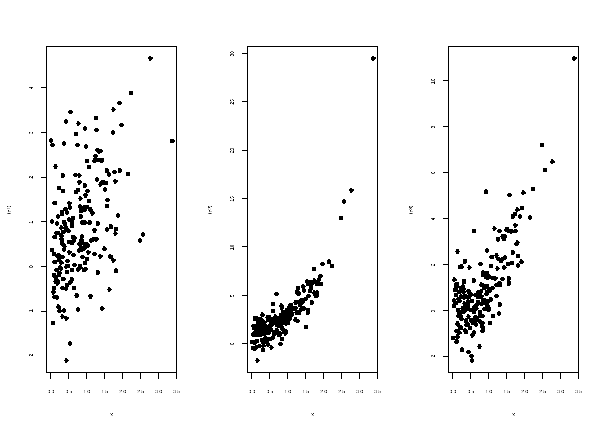
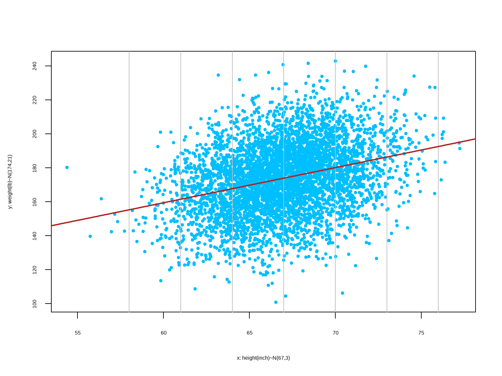

Chapter 10 Correlation and Regression
Learning Outcome
Construct linear regression models and correlation coefficients from datasets.
This chapter continues to build on the analysis of paired sample data. Here, we present methods for determining whether there is a correlation, or association, between two variables. For linear correlations, we identify an equation of a straight line that best fits the data which can be used to predict the value of one variable given the value of the other variable.
10.1 Correlation
A correlation exists between two variables when the values of one variable are somehow associated with the values of the other variable.
A linear correlation exists between two variables when there is a correlation and the plotted points of paired data result in a pattern that can be approximated by a straight line.

Bivariate Data - Scatterplot
- Scatterplots exhibit the relationship between two numeric variables.
- They are used for detecting patterns, trends, and relationships.
Bivariate Data - Positive Association
- Unit of observation used in the plot is ‘county’.
The plot shows positive association between education and income.
Linear Association between Variables
Linear Association: the data points in the scatterplot is clustered around a straight line
Positive (Linear) Association: above average values of one variable tend to go with above average values of the other; scatterplot slopes up.
Negative (Linear) Association: above average values of one variable tend to go with below average values of the other; scatterplot slopes down.
No (Linear) Association: Scatterplot shows no direction
10.2 Correlation Coefficient

Correlation coefficient: \(\lbrace r | -1 \le r \le +1 \rbrace\)
- measures the strength of the linear correlation (association) between the paired quantitative \(x\) values and \(y\) values in a sample; in other words, how tightly the points are clustered about a straight line.
- in order to have a linear correlation between two random variables, the pairs of \((x, y)\) data must have a bivariate normal distribution.
10.2.1 Calculating Correlation Coefficient
\[ \begin{array}{c|c|c|c} x & y & z_x & z_y & z_x \cdot z_y \\ \hline 1 & 2 & -1.414 & -0.777 & 1.098 \\ 2 & 3 & -0.707 & -0.291 & 0.206 \\ 3 & 1 & 0 & -1.263 & 0 \\ 4 & 6 & 0.707 & 1.166 & 0.824 \\ 5 & 6 & 1.414 & 1.166 & 1.648 \\ \hline \bar x = 3, s_x = 1.58 & \bar y = 3.6, s_y = 2.30 & & & r = \dfrac{1}{n} \sum z_x \cdot z_y = 0.755 \end{array} \]
Formula for Calculating Correlation Coefficient
\(\text {If the data are} \space (x_i, y_i), 1\le i\le n, \text {then}\)
\[ {\text{population: } \rho = \dfrac{1}{n}\sum_{i=1}^n \left(\frac{x_i-\mu_x}{\sigma_x}\right)\left(\frac{y_i-\mu_y}{\sigma_y}\right)} \\ {\text{sample: } r = \frac{1}{n-1}\sum_{i=1}^n \left(\dfrac{x_i-\bar x}{s_x}\right)\left(\frac{y_i-\bar y}{s_y}\right)} \]

Properties of Correlation Coefficient
- \(r\) is a pure number with no units
- \(-1\le r\le +1\)
- Adding a constant to one of the variables does not affect \(r\)
- Multiplying one of the variables by a positive constant does not affect \(r\)
- Multiplying one of the variables by a negative constant switches the sign of \(r\) but does not affect the absolute value of \(r\)
- \(r\) measures the strength of a linear relationship. It is not designed to measure the strength of a non-linear relationship.
- \(r\) is very sensitive to outliers.
Correlation coefficient measures linear association
If two variables have a non-zero correlation, then they are related to each other in some way, but that does not mean that one causes the other.
Two variable appear to strongly associated, but \(r\) is close to \(0\). This is because the relationship is clearly nonlinear. \(r\) measures linear association. Don’t use it if the scatter diagram is nonlinear.

10.2.2 Hypothesis Testing for Correlation Coefficient
Hypotheses If conducting a formal hypothesis test to determine whether there is a significant linear correlation between two variables, use the following null and alternative hypotheses that use \(\rho\) to represent the linear correlation coefficient of the population:
\[ \text{Null Hypothesis } H_0: \rho = 0 \text{ (no correlation)} \\ \text{Alt. Hypothesis } H_a: \rho \ne 0 \text{ (correlation)} \\ \\ \text{Test statistic: } U = \dfrac{r}{\sqrt{\dfrac{1-r^2}{n-2}}} \\ \\ \]
where \(r\) is the correlation coefficient. When \(H_0\) is true, \(U\) has a Student’s \(t\)-distribution with \(n-2\) degrees of freedom.
Then, calculate p-value and compare with significance level 5% to accept or reject null hypothesis.
Example:

\[ \begin{align} H_0&: \rho = 0 \\ H_a&: \rho \ne 0 \\ \\ \text{From data, } r &= 0.828 \\ n &= 6 - 2 = 4 \\ t &= \dfrac{r}{\sqrt{\frac{1-r^2}{n-2}}} = \frac{0.828}{\sqrt{\frac{1-0.828^2}{6-2}}} \\ &= 2.955 \\ \\ p -value &= 0.04176 < 0.05 \\ \end{align} \]
Hence, we reject null hypothesis. The data suggests that there is a linear association between dinner bill and tips.
10.3 Estimation from One Variable
When we have information available from only one variable, the mean of the variable is the best estimate of an unknown data point in that variable.
Estimate the height of one of these people: Heights (inches) ~ \(N(67,3)\)
Let’s say, estimate = \(c\)
estimation error = actual height - \(c\)
The “best†\(c\) is the one that makes the smallest root mean squared (r.m.s) error
The root mean squared (r.m.s) of the errors will be smallest if \(c = \mu\)
least squared estimate = \(\mu\) = 67 and r.m.s error = \(\sigma\) = 3
10.4 Regression Model: Estimation from Two Variables
We estimate the value of one variable \((y)\) from another variable \((x)\). Assume, both variables are approximately normally distributed.

The method for finding the equation of the straight line that best fits the points in a scatterplot of paired sample data. The best-fitting straight line is called the regression line, and its equation is called the regression equation. We can use the regression equation to make predictions for the value of one of the variables \((y)\), given the specific value of the other variable \((x)\).
10.4.1 A Linear Probabilistic Model

Regression Equation:
We allow for variation in individual responses \((y)\), while associating the mean linearly with the predictor \(x\). The model we fit is as follows:
\[ \begin{align} &E(y|x) = \beta_0 + \beta_1 x \\ \\ \text{individual response: } &y = \underbrace{\beta_0 + \beta_1 x}_{\text{systematic}} + \underbrace{\varepsilon}_{\text{random}} \\ \\ &\text{where,} \\ &x: \text{explanatory, predictor, or independent variable} \\ &y: \text{response or dependent variable} \\ \end{align} \]
\(\beta_0\) and \(\beta_1\) are unknown parameters, and \(\varepsilon\) is the random error component corresponding to the response whose distribution we assume is \(N(0, \sigma)\). We assume the error terms are independent from one another. Under this model, we say,
\[ y | x \sim N(\beta_0 + \beta_1 x, \sigma) \]
One limitation of linear regression is that we must restrict our interpretation of the model to the range of values of the predictor variables that we observe in our data. We cannot assume this linear relation continues outside the range of our sample data.
Requirements
- \(E(y|x) = \beta_0 + \beta_1 x\) is a linear function.
- For each value of \(x\), the corresponding values of \(y\) have a normal distribution.
- For the different values of \(x\), the distributions of the corresponding \(y\)-values all the the same variance.
Note: Outliers can have strong effect on the regression equation.
10.4.2 Least Squares Estimation of \(\beta_0\) and \(\beta_1\)
We now have the problem of using sample data to compute estimates of the parameters \(\beta_0\) and \(\beta_1\). First, we take a sample of \(n\) subjects, observing values \(y\) of the response variable and \(x\) of the predictor variable. We would like to choose as estimates for \(\beta_0\) and \(\beta_1\) , the values \(b_0\) and \(b_1\) that ‘best fit’ the sample data. The fitted equation can be given by:
\(\hat y = b_0 + b_1 x\)
We can choose the estimates \(b_0\) and \(b_1\) to be the values that minimize the distances of the data points to the fitted line. Now, for each observed response \(y_i\), with a corresponding predictor variable \(x_i\), we obtain a fitted value \(\hat y_i = b_0 + b_1x_i\). So, we would like to minimize the sum of the squared distances of each observed response to its fitted value. That is, we want to minimize the error sum of squares, SSE, where
\[ \displaystyle SSE = \sum_{i=1}^{n} (y_i - \hat y_i)^2 = \sum_{i=1}^{n} (y_i - (b_0 + b_1x_i))^2 \]
Derivation of Bivariate Regression Model

From bivariate scatter plot in standard units:
\[ \begin{align} z_y & = \rho \cdot z_x \\ \dfrac {y-\mu_y}{\sigma_y} & = \rho \cdot \dfrac {x-\mu_x}{\sigma_x} \\ y-\mu_y & = \rho \cdot \dfrac {\sigma_y}{\sigma_x} (x-\mu_x) \\ y & = \rho \cdot \dfrac {\sigma_y}{\sigma_x} (x-\mu_x) + \mu_y\\ y & = \left ( \mu_y - \rho \cdot \dfrac {\sigma_y}{\sigma_x}\mu_x \right ) + \left ( \rho. \dfrac {\sigma_y}{\sigma_x} \right ) \cdot x \\ y & = \beta_0 + \beta_1 \cdot x \\ \\ \text {Where, } & \begin{cases} \text{slope } (\beta_1) & = \rho \cdot \dfrac {\sigma_y}{\sigma_x} \\ \text{intercept } (\beta_0) & = \mu_y - \beta_1.\mu_x \\ \end{cases} \\ \\ \text {When, } x & = \mu_x, y = \mu_y \\ \end{align} \]
\[ \bbox[yellow,5px] { \color {black} {\implies \text {The regression line passes through the points of averages } (\mu_x, \mu_y).} } \]
Example: Finding the Equation
Find the equation of the regression line for estimating weight based on height.
Height (inches) (x): mean = 67 sd = 3Weight (lb) (y): mean = 174 sd = 21r = 0.304\[ \begin{align} \text{slope } (b_1) & = r. \dfrac {s_y}{s_x} \\ \text{intercept } (b_0) & = \bar y - b_1.\bar x \\ \end{align} \]
slope (b1) = 2.07 lb per inchintercept (b0) = 35 lbRegression Equation: Est. weight = 35 + 2.07.(height)A person who is 60 inches tall is estimated to be 159 lb10.4.3 Interpretation of Regression Equation
Intercept
Mathematically, the intercept is described as the mean response \((Y)\) value when all predictor variables \((X)\) are set to zero. Sometimes a zero setting for the predictor variable(s) is nonsensical, which makes the intercept noninterpretable.
For example, in the following equation: \(\hat {Weight} = 35 + 2 \times Height\)
\(Height = 0\) is nonsensical; therefore, the model intercept has no interpretation.
Why is it still crucial to include the intercept in the model?
The constant in regression model guarantees that the residuals have a mean of zero, which is a key assumption in regression analysis. If we don’t include the constant, the regression line is forced to go through the origin. This means that all of the predictors and the response variable must equal to zero at that point. If the fitted line doesn’t naturally go through the origin, the regression coefficients and predictions will be biased. The constant guarantees that the residuals don’t have an overall positive or negative bias.

Slope
The slope of the regression line measures how much the value of \(Y\) changes for every unit of change in \(X\).
For example, in the following equation: \(\hat {Weight} = 35 + 2 \times Height\)
The slope is \(2 \text { lb per inch}\) - meaning that if a group of people is one inch taller than another group, the former group will be on average \(2\) lb heavier than the later.
Remember, the slope should NOT be interpreted as: if one person gets taller by 1 inch, he/she will put on 2 lb of weight.
10.4.4 Residuals
Which line to use?
Objectively, we want a line that produces the least estimation error.
\(\text {Data } (y) = \text {Fit } (\hat y) + \text {Residual } (e)\)
Residuals are the leftover variation in the data after accounting for the model fit. These are the difference between observed and expected.
The residual of the \(i^{th}\) observation \((x_i, y_i)\) is the difference between the observed response \((y_i)\) and its predicted value based on model fit \((\hat y_i)\): \(e_i = y_i - \hat y_i\)

10.4.5 Least Squared Line
In the scatter plot, residual (in other words, estimation error) is shown as the vertical distance between the observed point and the line. If an observation is above the line, then its residual is positive. Observations below the line have negative residuals. One goal in picking the right linear model is for these residuals to be as small as possible.
Common practice is to choose the line that minimizes the sum of squared residuals.
\(\text{sum of squared residuals} = e_1^2 + e_2^2 + ... + e_n^2\)
There is only one line that minimizes the sum of squared residuals. It is called the least squared line. Mathematically, it can be shown that the regression line is the least squared line.
r.m.s error of regression
root mean squared (r.m.s) error of regression = r.m.s of residuals =
\[ \bbox[yellow,5px] { \color{black}{\sqrt {1-\rho^2}.\sigma_y} } \]
- \(\rho = 1 \text { or } -1: \space\) Scatter is a perfect straight line; r.m.s error of regression = \(0\)
- \(\rho = 0: \space\) No linear association; r.m.s error of regression = \(\sigma_y\)
- All other \(\rho: \space\) Regression is not perfect, but better than using the average; r.m.s error of regression \(\lt \sigma_y\)
Conditions for the Least Squared Line
Residual Plot
A residual plot is a scatterplot of the points \(x, y - \hat y\). The plot helps to examine whether the assumptions of the linear regression model are satisfied. One of the most important assumptions of linear regression is that the residuals are independent, normally distributed, and uncorrelated with the explanatory variable \((x)\). If these assumptions are satisfied, then the residual plot should show random and near symmetrical distribution of the residuals about the line \(y = 0\). A good residual plot should show no pattern.

Another assumption, known as the constant error variance, is tested by examining the plot of residual versus fit \((\hat y)\). If this assumption is satisfied, the plot should show constant variability of the residuals about the line \(y = 0\). The spread of the residuals is roughly equal at each level of the fitted values.
These assumptions are violated in data with correlated observations such as time series data (e.g. daily stock price). Linear regression is not appropriate to analyze data with such underlying structures.
`geom_smooth()` using formula 'y ~ x'10.4.6 Coefficient of Determination
\[ \text{total variation = explained variation + unexplained variation} \\ \sum(y - \bar y)^2 = \sum(\hat y - \bar y)^2 + \sum(y - \hat y)^2 \]
\(R^2\) is the proportion of the variance in the dependent variable \(y\) that is explained by the linear relationship between \(x\) and \(y\).
\[ R^2 = \frac{\text{explained variation}}{\text{total variation}} \]
\(R^2 = 58\%\) suggests that \(58\%\) of the variability in \(y\) can be explained by the variability in \(x\).
- \(R^2 \space\) provides a measure of how useful the regression line is as a prediction tool.
- If \(R^2 \space\) is close to 1, then the regression line is useful.
- If \(R^2 \space\) is close to 0, then the regression line is not useful.
10.4.7 Constructing Confidence Intervals for the Slope
The slope \(b_1\) of the least-squares regression line is a point estimate of the population slope \(\beta_1\). When the assumptions of the linear model are satisfied, we can construct a confidence interval for \(\beta_1\). We need a point estimate, a standard error, and the critical value.
To compute the standard error of \(b_1\), we first compute residual standard deviation, denoted as \(s_e\), which measures the spread of the points on the scatterplot around the least-squares regression line. The formula for the residual standard deviation is given by,
\[ s_e = \sqrt{\dfrac{\sum (y - \hat y)^2}{n-2}} \]
Now, the standard error of \(b_1\) can be found using the following formual,
\[ s_b = \dfrac{s_e}{\sqrt{\sum(x - \bar x)^2}} \]
Example:
regression model: \(\hat y = 356.739 + 5.639 x\)
\[ \begin{align} s_e &= \sqrt{\dfrac{\sum (y - \hat y)^2}{n-2}} = \sqrt{\dfrac{3398.6787}{18-2}} = 14.574547 \\ s_b &= \dfrac{s_e}{\sqrt{\sum(x - \bar x)^2}} = \dfrac{14.574547}{1415.7452} = 0.387349 \end{align} \]
Under the assumption of the linear model, \(\dfrac{b_1 - \beta_1}{s_b}\) has a student’s \(t\) distribution with \(n-2\) degrees of freedom. Therefore, the critical value of a \(100(1-\alpha)\%\) confidence interval is the value \(t_{\alpha/2}\) for which the area under the \(t\) curve with \(n-2\) degrees of freedom between \(-t_{\alpha/2}\) and \(t_{\alpha/2}\) is \(1-\alpha\).
The margin of error for a level \(100(1-\alpha)\%\) confidence interval is:
\(ME = t_{\alpha/2} \cdot s_b\)
So, a level \(100(1-\alpha)\%\) confidence interval for \(\beta_1\) is \[b_1 \pm t_{\alpha/2} \cdot s_b \\ = 5.639 \pm (2.12)(0.387349) \\ = [4.818, 6.460] \].
10.4.8 Test Hypotheses about the Slope
We can use the values of \(b_1\) and \(s_b\) to test hypotheses about the population slope \(\beta_1\).
If \(\beta_1 = 0\), then there is no linear relationship between the explanatory variable \(x\) and the outcome variable \(y\). For this reason, the null hypothesis most often tested as:
\[ H_0 : \beta_1 = 0 \\ H_a : \beta_1 \ne 0 \]
If this null hypothesis is rejected, we conclude that there is a linear relationship between \(x\) and \(y\), and that the explanatory variable \(x\) is useful in predicting the outcome variable \(y\).
Because the quantity \(\dfrac{b_1 - \beta_1}{s_b}\) has a Student’s \(t\) distribution with \(n-2\) degrees of freedom, we can construct the test statistic for testing \(H_0: \beta_1 = 0\) by setting \(\beta_1 = 0\).
The test statistic, \(t = \dfrac{b_1}{s_b}\).
Example:
Perform a test of \(H_0: \beta_1 = 0 \\ H_a : \beta_1 \gt 0\) on the slope of the following regression model: \(\hat y = 356.739 + 5.639 x\)
\[ b_1 = 5.639 \\ s_b = 0.387 \\ \\ t = \dfrac{b_1}{s_b} = \dfrac{5.639}{0.387} = 14.56 \\ df = 16 \]
The estimated \(p\)-value \(= 5.973 \times 10^{-11}\), which is less than \(0.05\). Therefore, we reject \(H_0\) and conclude that there is a statistically significant linear relationship between \(y\) and \(x\).